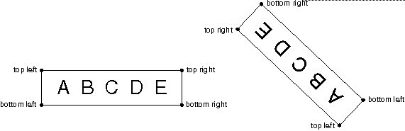

hps (HPS) - input
lCount1 (LONG) - input
It must be greater or equal to 0 and less or equal to 512
pchString (PCH) - input
lCount2 (LONG) - input
Contains the number of points to be returned in the aptlPoints array. Specify TXTBOX_COUNT to get the maximum information. This parameter must be greater or equal to 0.
aptlPoints (PPOINTL) - output
The list of points contains the relative coordinates of the text box in world coordinates. The array elements are numbered consecutively, starting with TXTBOX_TOPLEFT. The element number constants start with 0. A lCount2 value of TXTBOX_COUNT will cause all of the defined array elements to be returned.
The terms 'top-left', 'bottom-right', and so on, are well defined when the character angle is such that the baseline is parallel to the x axis and running left to right, and there is no character shear. If the character string is rotated or sheared, the term top-left applies to the corner of the box that appears in the top-left position when no rotation or shear is applied.
This is an example:
Set character angle = -1,1String = ABCDE
Coordinates returned are as shown:
The possible values for this parameter are:
TXTBOX_TOPLEFT
rc (BOOL) - returns
TRUE